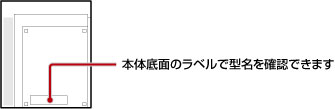

再生できるディスクの種類について
PS3™で再生できるディスクの種類は、PS3™のモデルによって異なります。お使いのPS3™で再生できるディスクについては、製品同梱の［使用上のご注意／故障かな？と思ったら］でご確認いただけます。
PlayStation®2規格ディスク／スーパーオーディオCDの再生について
PlayStation®2規格ディスク／スーパーオーディオCDは、次の型名のPS3™だけで再生できます。型名はPS3™本体底面のラベルで確認できます。

| 販売地域 | 型名 |
|---|---|
| 日本 | CECHA00, CECHB00 |
| アメリカ／カナダ | CECHA01, CECHB01, CECHE01 |
| 中南米 | CECHE11 |
| ヨーロッパ／オーストラリア／ニュージーランド | CECHC02, CECHC03, CECHC04, CECHC08 |
| 韓国 | CECHE05 |
| 香港／台湾／南アジア | CECHA12, CECHB12, CECHE12, CECHA07, CECHB07, CECHA06, CECHE06 |
ソフトウェアの互換性について
PlayStation®2／PlayStation®規格ディスクの再生に対応しているPS3™でも、一部のソフトウェアが従来のハードウェアと異なる動作をする場合や、適切に動作しない場合があります。それぞれのソフトウェアの互換状況については、各地域のWebサイトをご覧ください。
日本
http://www.jp.playstation.com/ps3/status/
アメリカ／カナダ／中南米
http://www.us.playstation.com/Support/CompatibleStatus
ヨーロッパ／オーストラリア／ニュージーランド
PC http://uk.playstation.com/games-media/news/articles/detail/item83402/
PS3™ http://ps3.uk.playstation.com/news/detail/item83402/
韓国
https://www.playstation.co.kr/support